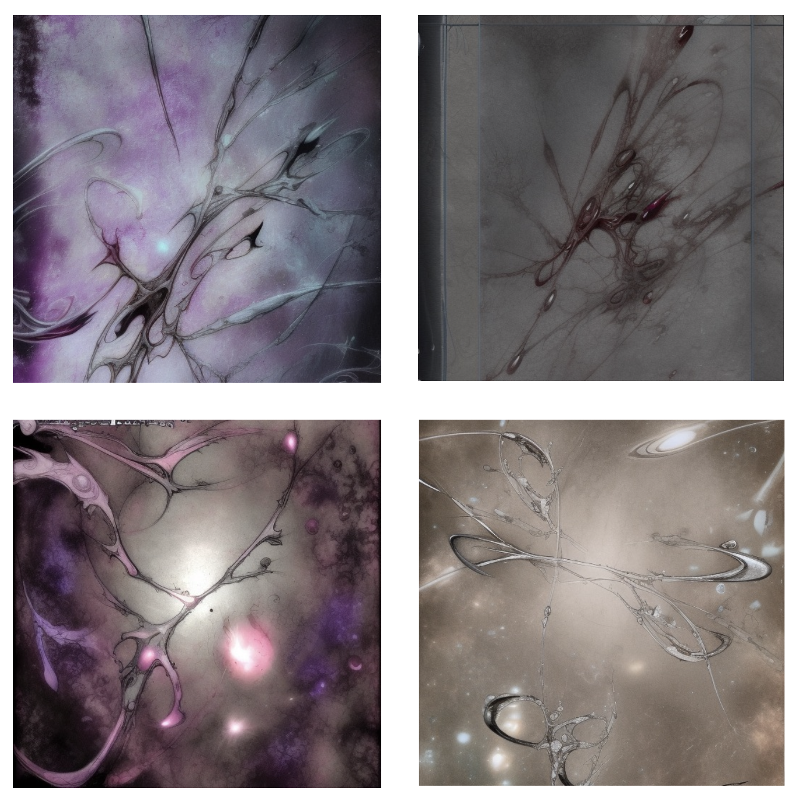
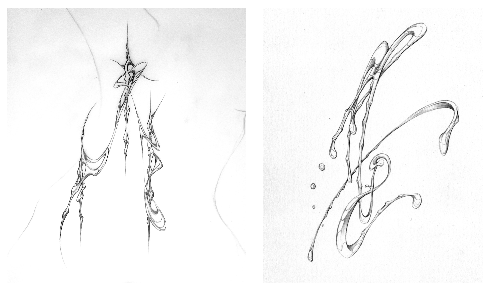
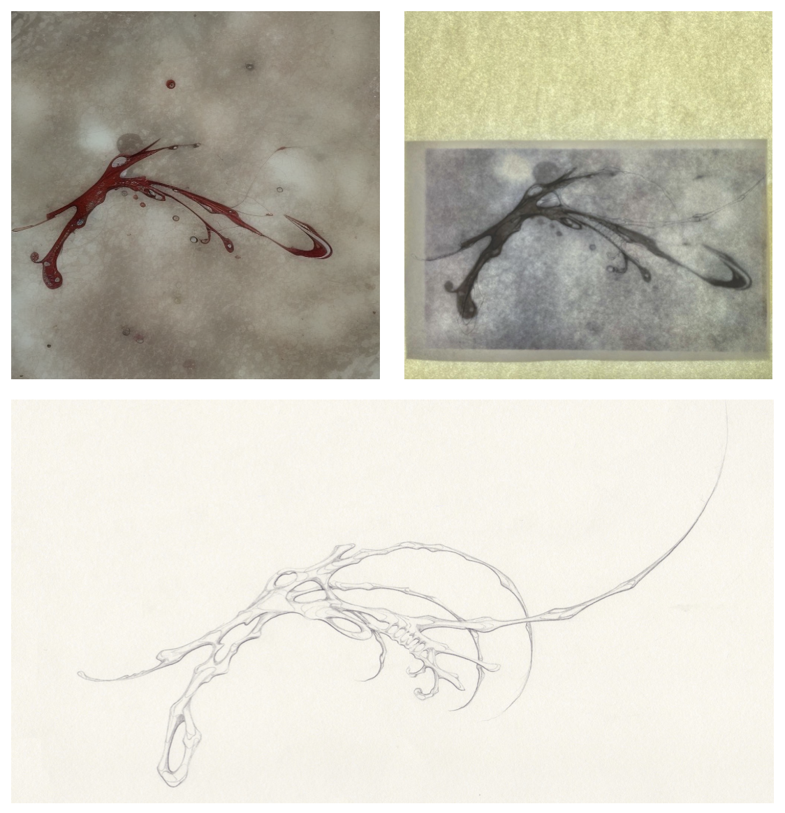

Generated with a Fine-tuned Stable Diffusion Model

Sakemin collaborates with tattoo artist JTA2 to use 70 of JTA2's tattoo flashes(images below) as a dataset for fine-tuning the Stable Diffusion model. During the training, they trained the tattoo flashes with the prompt "a drawing of jta2", and when the AI model finished training, they gave the model the keyword "jta2" and commanded it to generate images. The generated images are above this paragraph.

JTA2's IG Profile : https://www.instagram.com/j.ta.2/
Afterwards, Sakemin passed on his AI knowledge to JTA2 and established an AI collaboration system for him. JTA2 continues to apply and develop his work using AI, and has begun creating concept art for jewelry, accessories, and other works that embody his style, in addition to his tattoo flashes.
The images below depict Jta2's AI collaboration process. Jta2 creates new flash designs that incorporate their own style by tracing and refining images generated by AI.

The images below show the results of Jta2's concept experiments, in which they applied their aesthetic style beyond tattooing to jewelry and accessory designs.